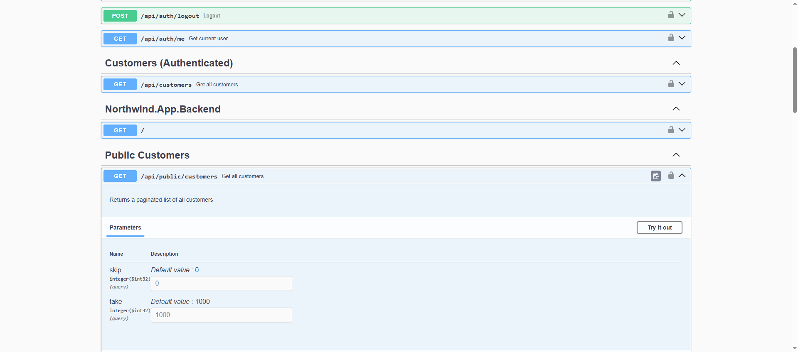
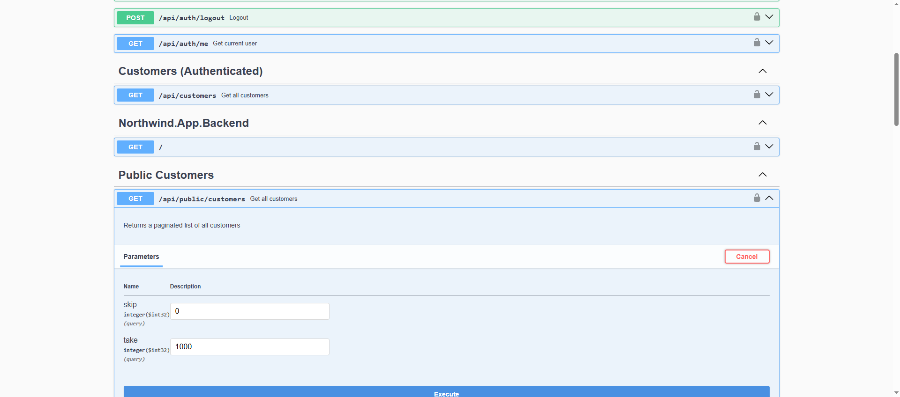

Backend
Sørg for at læse setup og overblik før du kigger på denne side. Og husk der er massere af ressourcer i Links og Ressourcer siden.
Eksempel kode
Som nævnt er hele backend-koden tilgængelig på GitHub (en platform til at dele og samarbejde om kode), så du kan følge med, eksperimentere og køre applikationen lokalt. Selv om du ikke har planer om at skrive kode, er en lokal installation god til at få forståelse for hvordan backend fungerer.
- Github: https://github.com/devcronberg/Northwind.App.Backend
- Live Demo: https://northwind-backend-b088.onrender.com
- Docker:
docker run -d --name northwind-api -p 5033:5033 -e ASPNETCORE_URLS=http://+:5033 ghcr.io/devcronberg/northwind.app.backend:latest- Se senere
Clone repository
Åbn en terminal og kør (du bruger her Git, et versionskontrolsystem, til at hente en kopi af koden):
Eller download som ZIP
Hvis du ikke har Git installeret, eller foretrækker at hente koden som en ZIP-fil:
- Gå til https://github.com/devcronberg/Northwind.App.Backend
- Klik på den grønne Code knap
- Vælg Download ZIP
- Pak ZIP-filen ud på din computer
- Åbn mappen i en terminal eller VS Code
Kør applikationen
- Restore dependencies
- Kør applikationen
- Åbn Swagger UI
Gå til http://localhost:5003/swagger i din browser.
Swagger er et værktøj, der automatisk dokumenterer din API og giver en interaktiv brugerflade, hvor du kan teste alle endpoints direkte fra browseren uden at skrive kode. Et endpoint er en specifik adresse (URL) i API’et, som udfører en bestemt handling - f.eks. hente data eller opdatere information.
Prøv eksempelvis at:
- Hente alle kunder via /api/customers endpoint
- Teste /health/live og /health/ready endpoints for at se om systemet kører
- Tjekke API-versionen med /version endpoint
Hvad er en Backend?
En backend er den del af en webapplikation, der kører på en server og håndterer:
- Data: Gemmer og henter information fra en database
- Forretningslogik: Udfører beregninger, valideringer, og regler
- Authentication: Sikrer at kun autoriserede brugere har adgang
- API: Udstiller endpoints som frontend kan kalde
Hvad er et REST API?
REST (Representational State Transfer) er en arkitektur for at bygge webservices. Et REST API bruger HTTP-protokollen til at kommunikere.
HTTP Metoder (Verbs)
| Metode | Formål | Eksempel |
|---|---|---|
GET |
Hent data | Hent liste af kunder |
POST |
Opret nyt | Opret ny kunde |
PUT |
Opdater eksisterende | Opdater kunde info |
DELETE |
Slet | Slet en kunde |
HTTP Status Codes
| Kode | Betydning | Eksempel |
|---|---|---|
200 OK |
Success | Data hentet succesfuldt |
201 Created |
Oprettet | Ny kunde oprettet |
400 Bad Request |
Ugyldig request | Manglende felter |
401 Unauthorized |
Ikke logget ind | Manglende JWT token |
404 Not Found |
Findes ikke | Kunde ID findes ikke |
500 Internal Server Error |
Serverfejl | Uventet exception |
RESTful Endpoints
Endpoints følger et konsistent mønster:
GET /api/customers → Hent alle kunder
GET /api/customers/ALFKI → Hent specifik kunde
POST /api/customers → Opret ny kunde
PUT /api/customers/ALFKI → Opdater kunde
DELETE /api/customers/ALFKI → Slet kunde
Hvad er den bygget med?
Backend-applikationen er bygget med moderne teknologier og følger bedste praksis for webudvikling. Her er en oversigt over de vigtigste komponenter:
Kernen: .NET og ASP.NET Core
Applikationen bruger .NET 10 – den nyeste version af Microsofts cross-platform framework. Specifikt er det en ASP.NET Core Web API, som er optimeret til at bygge højtydende RESTful API’er. ASP.NET Core er kendt for sin hastighed og skalerbarhed, og det fungerer ens på Windows, macOS og Linux.
Selvom dette projekt primært er en Web API (der kun sender data, ikke HTML-sider), bruger den også dele af ASP.NET Core MVC-arkitekturen. MVC står for Model-View-Controller og er et designmønster, der opdeler applikationen i tre dele:
- Model: Data og forretningslogik (f.eks. Customer, Order)
- View: Brugergrænsefladen (i dette projekt bruges views ikke, da det er en API)
- Controller: Håndterer HTTP-requests og returnerer svar
I en Web API bruges primært Model og Controller-delene. Controllers indeholder endpoints, der håndterer indkommende HTTP-requests (GET, POST, PUT, DELETE), arbejder med data via Models, og returnerer JSON-formaterede svar i stedet for HTML-sider.
Opret din egen Hello World MVC app
Du kan nemt oprette din egen ASP.NET Core MVC applikation for at eksperimentere med både HTML-visninger og JSON-data:
Åbn browseren på http://localhost:5000 (eller den port der oplyses) for at se den standard HTML-side, MVC-skabelonen genererer.
Tilføj et JSON endpoint:
Opret en ny controller-fil Controllers/ApiController.cs:
using Microsoft.AspNetCore.Mvc;
namespace HelloWorldApp.Controllers;
public class ApiController : Controller
{
[HttpGet("/api/hello")]
public IActionResult GetJson()
{
return Json(new { message = "Hello World", timestamp = DateTime.Now });
}
[HttpGet("/hello")]
public IActionResult GetHtml()
{
ViewBag.Message = "Hello World";
return View();
}
}
Opret en view-fil Views/Api/GetHtml.cshtml:
<!DOCTYPE html>
<html>
<head>
<title>Hello World</title>
</head>
<body>
<h1>@ViewBag.Message</h1>
<p>Dette er en HTML-side genereret af MVC</p>
</body>
</html>
Nu kan du:
- Besøge
http://localhost:5000/hellofor HTML-siden - Besøge
http://localhost:5000/api/hellofor JSON-data
Database: Entity Framework Core og SQLite
Til datahåndtering bruges Entity Framework Core (EF Core), som er et ORM (Object-Relational Mapping) værktøj. Det betyder, at man kan arbejde med databasen gennem C#-objekter i stedet for at skrive SQL-kode direkte.
Hvad er Entity Framework Core?
Entity Framework Core er Microsofts moderne database-framework til .NET, der fungerer som en bro mellem objektorienteret programmering og relationelle databaser. I stedet for at skrive SQL-forespørgsler manuelt, kan du arbejde med data som almindelige C#-klasser og objekter.
Hvordan fungerer det?
Forestil dig, at du har en tabel i databasen kaldet Customers med kolonner som CustomerId, CompanyName og ContactName. Med Entity Framework opretter du en C#-klasse, der matcher denne struktur:
public class Customer
{
public string CustomerId { get; set; }
public string CompanyName { get; set; }
public string ContactName { get; set; }
}
Nu kan du arbejde med kunder på denne måde:
// Hent alle kunder
var customers = context.Customers.ToList();
// Find en specifik kunde
var customer = context.Customers.FirstOrDefault(c => c.CustomerId == "ALFKI");
// Opret en ny kunde
var newCustomer = new Customer { CustomerId = "TEST", CompanyName = "Test Corp" };
context.Customers.Add(newCustomer);
context.SaveChanges();
Entity Framework oversætter automatisk denne C#-kode til SQL-forespørgsler bag scenen. Det gør koden mere læsbar, lettere at vedligeholde, og reducerer risikoen for SQL-injection angreb.
Fordele ved EF Core:
- Type-sikkerhed: Compileren fanger fejl, før programmet kører
- LINQ-support: Brug kraftfulde forespørgsler direkte i C#
- Migrations: Database-skemaet kan versionstyres og opdateres automatisk
- Cross-platform: Virker med mange forskellige databaser (SQL Server, MySQL, PostgreSQL, SQLite osv.)
- Mindre kode: Færre linjer kode sammenlignet med manuel SQL
SQLite som database
Databasen bag applikationen er SQLite – en letvægts, filbaseret database, der gemmer alt i én enkelt fil (Northwind.db). Det er perfekt til udvikling, demos og mindre applikationer, fordi det:
- Ikke kræver en separat database-server
- Er utrolig hurtigt for læse-operationer
- Nemt kan kopieres og deles
- Fungerer identisk på alle platforme
Den klassiske Northwind-database fungerer som datagrundlag og indeholder eksempeldata om kunder, ordrer, produkter, ansatte og meget mere. Northwind er en Microsoft-database, der har været brugt i tutorials og undervisning siden 1990’erne.
Se i øvrigt: https://mcronberg.github.io/bogenomcsharp/level1/introefcore
Sikkerhed: JWT Authentication
Applikationen bruger JWT (JSON Web Tokens) til autentificering. Det er industristandarden for at sikre API’er, og det er vigtigt at forstå, hvordan det fungerer.
Hvad er HTTP og Headers?
Når din browser (eller en app) kommunikerer med en server, sker det via HTTP (HyperText Transfer Protocol). Hver request består af flere dele:
- URL: Adressen på den ressource, du vil tilgå (f.eks.
/api/customers) - Method: Hvad du vil gøre (GET = hent, POST = opret, PUT = opdater, DELETE = slet)
- Headers: Metadata om requesten (f.eks. hvilken type data du sender, eller hvem du er)
- Body: Selve data (kun ved POST/PUT)
Headers er som kuverter omkring et brev - de fortæller serveren vigtig information uden at være en del af selve beskeden. Et eksempel på en header kunne være:
Hvad er en Token?
En token er en tekststreng, der fungerer som en digital nøgle eller et adgangskort. Forestil dig det som en indgangsbillet til en koncert - den beviser, at du har betalt (logget ind) og giver dig adgang til bestemte områder.
En JWT-token er opbygget i tre dele, adskilt af punktummer:
- Header: Beskriver token-typen og krypteringsmetoden
- Payload: Indeholder data om brugeren (f.eks. brugernavn, rettigheder, udløbstidspunkt)
- Signature: En digital signatur, der sikrer at token’en ikke er blevet manipuleret
Du kan se indholdet af en token på jwt.io.
Hvordan fungerer login-flowet?
- Login: Brugeren sender brugernavn og password til
/api/auth/login - Validering: Serveren tjekker om credentials er korrekte
- Token-generering: Serveren opretter to tokens:
- Access Token: Giver adgang til beskyttede endpoints (kort levetid)
- Refresh Token: Bruges til at få en ny access token (længere levetid)
- Retur: Tokens sendes tilbage til klienten
- Brug: Ved efterfølgende requests sendes access token i Authorization-header
Access Token vs Refresh Token
Det er som at have to forskellige nøgler:
Access Token:
- Kort levetid (f.eks. 60 minutter)
- Sendes med ved hver request til beskyttede endpoints
- Indeholder brugerinfo og rettigheder
- Kan ikke tilbagekaldes - derfor skal den udløbe hurtigt
- Eksempel: “Jeg er admin-bruger, og denne token er gyldig i 1 time”
Refresh Token:
- Lang levetid (f.eks. 7 dage)
- Bruges KUN til at få en ny access token når den gamle udløber
- Gemmes sikkert på klienten
- Kan tilbagekaldes af serveren (f.eks. ved logout)
- Eksempel: “Jeg kan få en ny adgangsnøgle uden at logge ind igen”
Hvorfor to tokens?
Sikkerhed! Access token sendes hele tiden over netværket og er derfor mere udsat. Hvis nogen stjæler den, er den kun gyldig i kort tid. Refresh token sendes sjældent og bruges kun til at forny adgang, hvilket gør systemet sikrere.
Hvad er cURL?
cURL (Client URL) er et kommandolinjeværktøj til at sende HTTP-requests. Det er perfekt til at teste API’er uden at skulle bruge en browser eller en grafisk klient som Postman.
cURL er indbygget i Windows 10/11, macOS og Linux. Du kan teste om du har det ved at køre:
Vigtige cURL parametre:
-X POST- Angiver HTTP method (GET er standard)-H- Tilføjer en header-d- Sender data i request body
Windows vs Linux/Mac:
På Windows skal du bruge dobbelte anførselstegn " i stedet for enkelte ', og for at fortsætte en kommando over flere linjer bruges backtick ` i stedet for backslash \.
Eksempel på brug (Windows):
# 1. Login og få tokens
curl -X POST http://localhost:5003/api/auth/login `
-H "Content-Type: application/json" `
-d "{\"username\":\"admin\",\"password\":\"admin\"}"
# Svar:
# {
# "accessToken": "eyJhbGc...",
# "refreshToken": "def456...",
# "expiresIn": 3600
# }
# 2. Brug access token til beskyttet endpoint
curl http://localhost:5003/api/customers `
-H "Authorization: Bearer eyJhbGc..."
# 3. Når access token udløber, forny den med refresh token
curl -X POST http://localhost:5003/api/auth/refresh `
-H "Content-Type: application/json" `
-d "{\"refreshToken\":\"def456...\"}"
Dette system gør det muligt at have både offentlige endpoints (ingen login påkrævet, f.eks. /api/public/customers) og beskyttede endpoints (kræver valid access token, f.eks. /api/customers).
Dokumentation: Swagger/OpenAPI
For at gøre API’et let at teste og forstå, er der integreret Swagger (også kaldet OpenAPI). Det genererer automatisk en interaktiv dokumentation, hvor man kan se alle endpoints, deres parametre og prøve at kalde dem direkte fra browseren.
Hvad er Swagger?
Swagger er et værktøj, der automatisk dokumenterer dit API baseret på din kode. I stedet for at skulle skrive og vedligeholde dokumentation manuelt, scanner Swagger din controllers og genererer en komplet oversigt over:
- Alle tilgængelige endpoints
- Hvilke HTTP-metoder de understøtter (GET, POST, PUT, DELETE)
- Hvilke parametre de kræver
- Hvilket data-format de returnerer
- Eventuelle sikkerhedskrav (f.eks. JWT authentication)
OpenAPI Specifikationen
Swagger bruger OpenAPI Specification (tidligere kendt som Swagger Specification) - en industristandard for at beskrive REST API’er. Dette betyder at:
- Dokumentationen er maskinlæsbar og kan importeres i andre værktøjer
- Andre udviklere kan nemt forstå dit API
- Klienter kan generere kode automatisk baseret på specifikationen
Hvordan ser Swagger UI ud?
Du kan se det live på https://northwind-backend-b088.onrender.com/swagger/index.html.
Når du åbner Swagger UI, ser du:
- API Information: Øverst vises API’ets navn, version og beskrivelse
- Authorize knap: I højre side findes en “Authorize” knap, hvor du kan indtaste din JWT token for at teste beskyttede endpoints
- Endpoint Groups: Endpoints er grupperet efter controllers:
- Auth - Login, logout, refresh tokens
- Customers - CRUD-operationer for kunder (beskyttet)
- PublicCustomers - Offentlige kunde-endpoints (ingen login)
-
System - Health checks, version, test endpoints
-
Expanderbare Sektioner: Hver endpoint kan klappes ud for at se:
- Detaljeret beskrivelse
- Required/optional parametre
- Eksempel på request body
- Mulige response-koder (200, 400, 401, 404, etc.)
- Eksempel på response data

Sådan tester du et endpoint:
- Vælg et endpoint - Klik på f.eks.
GET /api/public/customers

- Klik “Try it out” - Knappen øverst til højre i det udklappede område

- Udfyld parametre - Hvis endpoint’et kræver parametre (f.eks.
skipogtakefor pagination) - Klik “Execute” - Dette sender en faktisk HTTP-request til serveren
- Se resultatet - Under “Responses” ser du:
- Request URL (den faktiske URL der blev kaldt)
- Response Code (f.eks. 200 OK)
- Response Body (JSON-data fra serveren)
- Response Headers
Test beskyttede endpoints:
For endpoints der kræver authentication (f.eks. /api/customers):
- Login først - Brug
/api/auth/loginendpoint’et med credentialsadmin/admin - Kopiér access token - Fra response body
- Klik “Authorize” - Den grønne knap øverst
- Indtast token - Skriv
Bearerefterfulgt af din token (eller bare token’en, Swagger tilføjer “Bearer” automatisk) - Klik “Authorize” og derefter “Close”
- Test endpoint - Nu kan du teste beskyttede endpoints
Eksempel på endpoints du kan teste:
GET /api/public/customers- Hent alle kunder (ingen login)GET /api/public/customers/{id}- Hent specifik kunde (prøv med 1)GET /health/live- Er serveren i live?GET /version- Hvilken version kører der?POST /api/auth/login- Login og få tokensGET /api/customers- Hent kunder (kræver login)
Fordele ved Swagger:
- Altid opdateret: Dokumentation genereres fra koden, så den er aldrig forældet
- Interaktiv: Test API’et direkte uden at skulle skrive kode eller bruge eksterne værktøjer
- Udviklervenlig: Gør det nemt for nye udviklere at forstå API’et
- Standard: OpenAPI er industristandard, så værktøjer som Postman kan importere specifikationen
- Fejlfinding: Se præcis hvilke requests der sendes og hvad serveren returnerer
Prøv det selv
Gå til https://northwind-backend-b088.onrender.com/swagger og prøv at:
- Hente alle kunder via
GET /api/public/customers - Søge efter en specifik kunde med ID
ALFKI - Logge ind med admin/admin
- Teste det beskyttede
/api/customersendpoint
Du vil hurtigt få en forståelse for, hvordan API’et fungerer!
Logging: Serilog
Til struktureret logging bruges Serilog, som sikrer at alle logbeskeder formateres konsistent og kan læses både af mennesker og maskiner. Dette er vigtigt når applikationen kører i containers eller i skyen.
Hvorfor logge?
Logging er som en dagbog for din applikation. Den registrerer hvad der sker, hvornår det sker, og hvorfor. Det er uundværligt for at:
- Finde fejl: Når noget går galt i produktion, er logs ofte det eneste spor til at forstå hvad der skete
- Overvåge performance: Se hvilke dele af applikationen der er langsomme
- Forstå brugsmønstre: Hvilke endpoints bruges mest? Hvornår er der mest trafik?
- Sikkerhed: Opdage mistænkelig aktivitet eller forsøg på uautoriseret adgang
- Debugging: Under udvikling kan man se hvad koden egentlig gør
Forestil dig at køre en webshop uden logs - hvis en kunde klager over at en ordre ikke blev gennemført, har du ingen måde at finde ud af hvad der gik galt.
Logging vs Audit vs Trace - hvad er forskellen?
Disse tre begreber overlapper, men har forskellige formål:
Logging (Generel logging):
- Formål: Registrere generel applikationsaktivitet og fejl
- Hvem bruger det: Primært udviklere og driftspersonale
- Eksempler:
- “Applikationen startede kl. 10:23”
- “Database connection fejlede efter 3 forsøg”
- “API endpoint /api/customers returnerede 200 OK på 145ms”
- Levetid: Typisk opbevares i dage eller uger
- I vores projekt: Serilog logger alt fra HTTP-requests til database-queries
Audit (Revisionsspor):
- Formål: Dokumentere HVEM gjorde HVAD og HVORNÅR (kritiske handlinger)
- Hvem bruger det: Compliance-teams, revisorer, sikkerhedsansvarlige, juridisk afdeling
- Eksempler:
- “Bruger admin@example.com ændrede kundedata for ALFKI kl. 14:32”
- “Bruger john@company.com slettede 5 ordrer kl. 09:15”
- “Login-forsøg fejlede 3 gange for bruger test@test.com“
- Levetid: Ofte lovpligtigt at gemme i måneder eller år (GDPR, finansielle regler)
- Kan ALDRIG slettes eller modificeres: Det er juridisk dokumentation
- I vores projekt: Kunne implementeres ved at logge alle POST/PUT/DELETE operationer med bruger-ID
Trace (Sporings-information):
- Formål: Detaljeret følge af programmets flow gennem forskellige komponenter
- Hvem bruger det: Udviklere under debugging af komplekse problemer
- Eksempler:
- “Metode GetCustomer(id=5) kaldt”
- “Database query: SELECT * FROM Customers WHERE Id = 5”
- “Returnerer 1 række fra database”
- “Serialiserer Customer objekt til JSON”
- “HTTP response sendt til klient”
- Levetid: Typisk kun aktiveret midlertidigt under fejlfinding
- Meget detaljeret: Kan generere enorme mængder data
- Performance-påvirkning: Kan gøre applikationen langsommere
- I vores projekt: Kan aktiveres via log-levels (Debug, Trace)
Log Levels i Serilog:
Serilog bruger forskellige niveauer til at kategorisere log-beskeder:
- Verbose/Trace: Ekstremt detaljeret (kun til udvikling)
- Debug: Debug-information (kun til udvikling)
- Information: Generel information om normal drift
- Warning: Noget uventet, men ikke kritisk
- Error: Fejl der skal håndteres
- Fatal: Kritiske fejl der stopper applikationen
I produktion kører man typisk kun med Information eller højere, mens man i udvikling kan køre med Debug eller Trace.
Hvad er en NuGet pakke?
NuGet er .NET’s pakkehåndteringssystem - som App Store for kode-biblioteker. I stedet for at skulle downloade og håndtere afhængigheder manuelt, kan man installere dem med én kommando.
Hvordan fungerer det?
Når du udvikler en .NET applikation, vil du ofte bruge funktionalitet, som andre har bygget - f.eks. Serilog til logging, Entity Framework til database-adgang, eller JSON.NET til at arbejde med JSON-data.
En NuGet pakke er:
- En ZIP-fil der indeholder kompileret kode (DLL-filer)
- Metadata om pakken (version, afhængigheder, forfatter)
- Dokumentation (README, changelog)
Installation:
# Installer en enkelt pakke
dotnet add package Serilog
# Installer en specifik version
dotnet add package Serilog --version 3.1.1
# Se installerede pakker
dotnet list package
I projektfilen (.csproj):
Når du installerer en pakke, tilføjes den automatisk til din .csproj fil:
<ItemGroup>
<PackageReference Include="Serilog" Version="3.1.1" />
<PackageReference Include="Serilog.Sinks.Console" Version="5.0.1" />
<PackageReference Include="Serilog.Sinks.File" Version="5.0.0" />
</ItemGroup>
NuGet
Den centrale pakke-database er nuget.org, hvor over 400.000 pakker er tilgængelige. Du kan søge efter pakker, se downloads, læse dokumentation og tjekke om de er aktivt vedligeholdt.
Fordele ved NuGet:
- Nem installation: Én kommando i stedet for manuel download
- Automatisk opdatering:
dotnet restorehenter alle afhængigheder - Versionsstyring: Specificer præcis hvilken version du vil bruge
- Afhængighedshåndtering: Hvis Serilog kræver andre pakker, installeres de automatisk
- Open source: De fleste pakker er gratis og open source
- Kvalitetsindikatorer: Se antal downloads, GitHub-stars, og seneste opdatering
Find pakker
Søg efter NuGet pakker på nuget.org eller brug kommandoen:
Tjek altid:
- Antal downloads (populære pakker har millioner)
- Seneste opdatering (er projektet aktivt?)
- GitHub repository (kan du se kildekoden?)
- Licens (er det gratis at bruge?)
Containerisering: Docker
Applikationen er pakket i en Docker container, hvilket betyder at den kan køre ens overalt – uanset om det er på din lokale maskine, i skyen eller på en server. Dockerfile’n bruger en multi-stage build, som gør det muligt at holde den endelige container lille (cirka 220MB) og sikker ved at køre som en non-root bruger.
Hvad er en Container?
En container er en let, standalone pakke, der indeholder: - Din applikation - Runtime (.NET) - Libraries - Dependencies - Configuration
Fordele: - ✅ “Virker på min maskine” problem løst - ✅ Samme miljø i development, test, production - ✅ Hurtig deployment - ✅ Nem skalering - ✅ Isolation (hver app i sin container)
Docker vs VM: - VM: Fuld OS, stor, langsom boot - Container: Deler host OS kernel, lille, hurtig boot (sekunder)
Dockerfile
Dockerfile er en opskrift på hvordan containeren bygges:
# Stage 1: Build
FROM mcr.microsoft.com/dotnet/sdk:10.0 AS build
WORKDIR /src
COPY ["Northwind.App.Backend.csproj", "./"]
RUN dotnet restore
COPY . .
RUN dotnet build -c Release -o /app/build
# Stage 2: Publish
FROM build AS publish
RUN dotnet publish -c Release -o /app/publish /p:UseAppHost=false
# Stage 3: Runtime
FROM mcr.microsoft.com/dotnet/aspnet:10.0 AS final
WORKDIR /app
# Security: Run as non-root user
RUN groupadd -g 1001 appuser && \
useradd -r -u 1001 -g appuser appuser
USER appuser
COPY --from=publish /app/publish .
# Dynamic port binding
ENV PORT=5033
EXPOSE 5033
ENTRYPOINT ["dotnet", "Northwind.App.Backend.dll"]
Multi-stage build fordele: - Stage 1: SDK image (stor, 700MB) - kun til build - Stage 3: Runtime image (lille, 200MB) - til produktion - Resultat: Mindre image, hurtigere deployment
Option 1: Brug Pre-built Image fra GitHub Container Registry (Anbefalet)
Dette projekt publicerer automatisk Docker images til GitHub Container Registry (GHCR) ved hver commit til main branch. Dette betyder at du ikke behøver at bygge imaget selv.
Hurtigt kom i gang:
# Pull seneste image
docker pull ghcr.io/devcronberg/northwind.app.backend:latest
# Kør container
docker run -d --name northwind-api \
-p 5033:5033 \
-e ASPNETCORE_URLS=http://+:5033 \
ghcr.io/devcronberg/northwind.app.backend:latest
# Tilgå API'et på http://localhost:5033
# Swagger dokumentation: http://localhost:5033/swagger
Med Docker Compose (anbefalet til udvikling):
Opret en docker-compose.yml fil:
services:
northwind-api:
image: ghcr.io/devcronberg/northwind.app.backend:latest
container_name: northwind-backend
ports:
- "5033:5033"
environment:
- ASPNETCORE_URLS=http://+:5033
- ASPNETCORE_ENVIRONMENT=Production
restart: unless-stopped
Start med:
Tilgængelige image tags:
latest- Nyeste version fra main branch0.9.0- Specifik version (fra .csproj Version tag)main-sha-abc123- Commit-specific version
Option 2: Byg Docker Image Selv
Fra source code:
# Klon repository
git clone https://github.com/devcronberg/Northwind.App.Backend.git
cd Northwind.App.Backend
# Byg image
docker build -t northwind-backend .
# Kør container
docker run -d --name northwind-api \
-p 5033:5033 \
-e ASPNETCORE_URLS=http://+:5033 \
northwind-backend
Eller brug Docker Compose (inkluderet i repository):
Docker Image Detaljer
- Multi-stage build - Optimeret til størrelse og sikkerhed
- Non-root bruger - Kører som
appuser(UID 1001) - Størrelse - Cirka 220MB (kun runtime)
- Base images:
- Build:
mcr.microsoft.com/dotnet/sdk:10.0 - Runtime:
mcr.microsoft.com/dotnet/aspnet:10.0 - Build kvalitet - Bruger
--warnaserrorflag, så deployment fejler hvis der er warnings - Health Check - Built-in healthcheck via
/health/liveendpoint - Automatisk publicering - GitHub Actions bygger og pusher til GHCR ved hver commit
Nyttige Docker Kommandoer
# Se kørende containers
docker ps
# Se logs
docker logs northwind-api
# Se logs live
docker logs -f northwind-api
# Stop container
docker stop northwind-api
# Start container igen
docker start northwind-api
# Fjern container
docker rm northwind-api
# Pull nyeste version
docker pull ghcr.io/devcronberg/northwind.app.backend:latest
# Opdater til nyeste version
docker compose pull && docker compose up -d
Cloud Deployment: Render.com
Backend’en er deployed på Render.com – en moderne cloud-platform, der gør deployment utrolig nemt. Hver gang der pushes nye ændringer til GitHub, bygger og deployer Render automatisk den nye version. Det kører på deres gratis tier, som dog lukker ned efter 15 minutters inaktivitet (og tager 30-50 sekunder at starte op igen).
Features:
- ✅ Git-baseret deployment (push to deploy)
- ✅ Automatisk SSL (HTTPS)
- ✅ Health checks
- ✅ Environment variables
- ✅ Auto-scaling
- ✅ Gratis tier (med begrænsninger)
render.yaml (Blueprint)
services:
- type: web
name: northwind-backend
runtime: docker
region: frankfurt
plan: free
healthCheckPath: /health/live
envVars:
- key: ASPNETCORE_ENVIRONMENT
value: Production
- key: Jwt__Secret
generateValue: true
- key: PORT
value: 5033
Deployment proces:
- Push kode til GitHub
- Connect GitHub repo til Render
- Render detekterer
render.yaml - Bygger Docker image
- Deployer til Frankfurt region
- Applikation tilgængelig på
https://[app-name].onrender.com
Free Tier Begrænsninger
⚠️ Render Free Tier:
- Spinner ned efter 15 min inaktivitet
- Første request efter spin-down tager 30-60 sek
- 750 timer/måned gratis
- Perfekt til demos, ikke production
CI/CD med GitHub Actions
Projektet bruger GitHub Actions til automatisk build og publicering af Docker images. Dette er et eksempel på Continuous Integration/Continuous Deployment (CI/CD) - en moderne praksis hvor kode automatisk bygges, testes og deployes.
Hvad er CI/CD?
CI/CD står for Continuous Integration og Continuous Deployment:
Continuous Integration (CI): - Automatisk bygning af koden når du pusher til GitHub - Kører tests for at sikre at ny kode ikke ødelægger noget - Validerer kodekvalitet (i vores projekt: fejler ved compiler warnings) - Giver hurtig feedback hvis noget er galt
Continuous Deployment (CD): - Automatisk deployment til produktion når builds lykkes - I vores projekt: Publicerer Docker image til GitHub Container Registry - Ingen manuel proces - alt sker automatisk - Hurtigere releases og mindre menneskelige fejl
Automatisk Docker Image Publishing
Ved hver push til main branch sker følgende automatisk:
- GitHub Actions workflow starter - Triggeret af ny commit
- Docker image bygges - Med multi-stage build
- Koden kompileres - Med
--warnaserror(fejler ved warnings) - Version udtrækkes - Fra
.csprojfil automatisk - Image tagges - Med
latest, version nummer og commit SHA - Pushes til GHCR - GitHub Container Registry
- Tilgængeligt øjeblikkeligt - Klar til brug på
ghcr.io/devcronberg/northwind.app.backend
Tags der oprettes automatisk:
latest- Nyeste version fra main branch0.9.0- Version nummer fra .csprojmain-sha-abc123- Git commit SHA (sporbarhed)
GitHub Actions Workflow
Workflowet ligger i .github/workflows/docker-publish.yml og udfører:
- ✅ Bygger Docker image med multi-stage build
- ✅ Ekstraerer version fra .csproj automatisk
- ✅ Tagger imaget med version, latest og commit SHA
- ✅ Pusher til GitHub Container Registry
- ✅ Fejler hvis der er compiler warnings (
--warnaserror)
Se build status:
- Actions tab: https://github.com/devcronberg/Northwind.App.Backend/actions
- Package: https://github.com/devcronberg/Northwind.App.Backend/pkgs/container/northwind.app.backend
Manuelt trigger workflow:
Hvis du vil bygge en ny version uden at lave en commit:
# Via GitHub web interface:
# Actions → Build and Push Docker Image → Run workflow
# Eller via GitHub CLI:
gh workflow run docker-publish.yml
Fordele ved automatisk publishing
- Ingen manuel proces - Glem aldrig at bygge et nyt image
- Konsistent - Samme build-proces hver gang
- Sporbarhed - Hver version kan spores til en specifik commit
- Hurtigere - Ny version klar minutter efter commit
- Fejlhåndtering - Opdager problemer øjeblikkeligt (warnings, build fejl)
- Kvalitet -
--warnaserrorsikrer at ingen warnings når produktion
Kodekvalitet: Meziantou.Analyzer
For at sikre høj kodekvalitet bruges Meziantou.Analyzer – et værktøj, der scanner koden for almindelige fejl og dårlige praksisser. Projektet er endda konfigureret til at fejle under build, hvis der er warnings, hvilket tvinger udvikleren til at rette problemerne med det samme.